|
 |
Van Gogh is famed for the great vitality of his works which are
characterized by expressive and emotive use of brilliant color and energetic application
of impastoed (**) paint.
Unfortunately the traumas of his life, documented in his letters, have tended to dominate
and distort modern perceptions of his art.
Tip:
Please point the stamps with the mouse index for more information about
the works of art displayed.
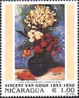 |
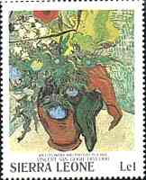 |
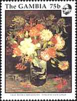 |
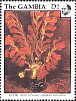 |
The Sunflowers (see below on the card) were painted in 1888. The work is
signed: Vincent and was purchased by the Trustees of the Courtauld Fund
in 1924.
This is one of four paintings of sunflowers dating from August and
September 1888. They were intended to decorate the Yellow House in Arles,
where van Gogh and Gauguin were to work together.
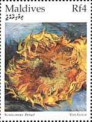 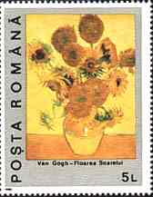 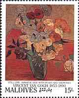 |
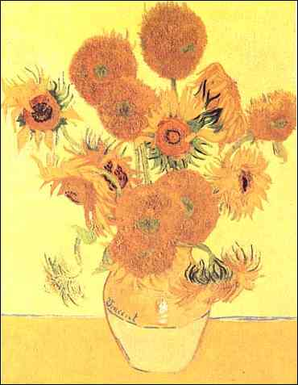 Sunflowers.
National Gallery, London |
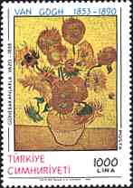 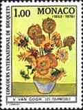 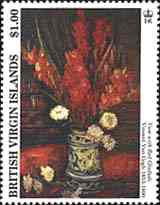 |
The dying flowers are built up with
heavy brushstrokes. The impasto evokes the texture of the seed-heads.
Van Gogh produced a replica of this painting in January 1889
(Rijksmuseum Vincent Van Gogh, Amsterdam).
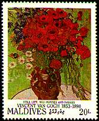 |
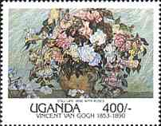 |
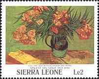 |
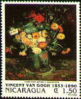 |
(*) Post-Impressionism. Broadly speaking the term Post-Impressionism embraces the artists working in France in the 1880s, immediately after the Impressionists. It was coined by Roger Fry for his exhibition of 1910 in which he showed Cézanne, van Gogh and Gauguin and Seurat. The classification covers artists who were aware of Impressionism but who sought to move beyond it - the term is sometimes applied to late work of the original Impressionists.
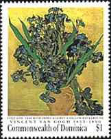 |
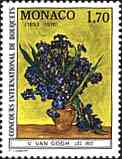 |
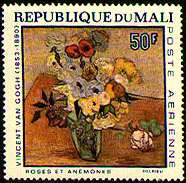 |
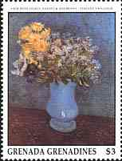 |
(**) In painting, impasto (from the Italian for dough) describes areas of the surface of a painting which are heavily built up with paint layers. Impastoed paint is highly textured; brush or palette knife marks are usually clearly evident. The intention is to make the light falling across the painting reflect in a particularly noticeable way. Highlights, or perhaps jewels on a costume, may be heavily impastoed for this reason, as in some of the works of Rembrandt. After Microsoft Art Gallery, 1993.
Background: Blossoming Almond Tree